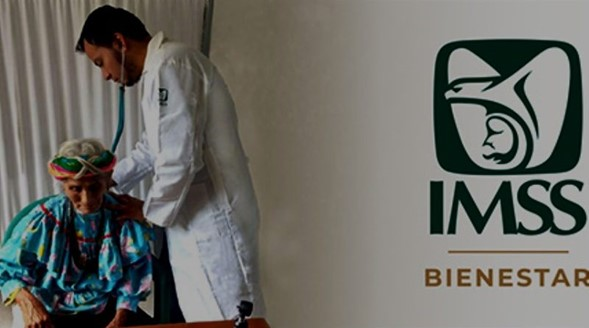
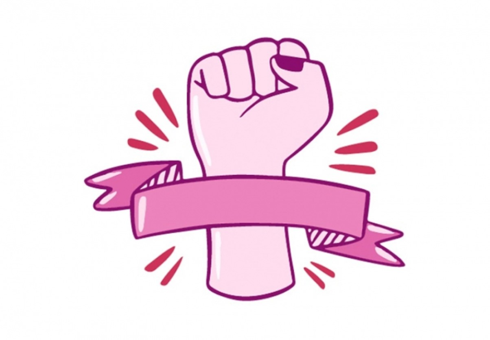

Nací en 1962 en la Ciudad de México, donde también crecí
Durante mi juventud, me formé como física en las aulas de la
Facultad de Ciencias de la UNAM
Cursé estudios de Maestría en Ingeniería Energética y fui la
primera mujer en obtener el grado de doctora en Ingeniería
Energética, también por la UNAM
Soy investigadora del Instituto de Ingeniería de la UNAM, con
licencia, y miembro de la Academia Mexicana de Ciencias
En 2007, fui parte del Panel de Expertos en Cambio Climático que
ganó el Premio Nobel de la Paz
Encabezaremos un gobierno honesto
Encabezaremos un gobierno honesto, sin influyentismo, corrupción o
impunidad. La austeridad, la honestidad y la erradicación de la
corrupción seguirán siendo política de Estado. Para ello,
estableceremos un modelo ejemplar de fiscalización del servicio
público, para que cualquier acto indebido sea sancionado. No
regresará la corrupción que tanto daño le hizo a México.
Pensión Universal
2.) Garantizaremos la pensión universal de las personas adultas
mayores desde los 65 años, el apoyo a personas con discapacidad,
jóvenes construyendo el futuro y el programa de bienestar de niños y
niñas de madres trabajadoras. 3.) Los estudiantes de preescolar,
primaria y secundarias públicas tendrán una beca universal como la
que establecí en la Ciudad de México. Se irá cumpliendo
progresivamente en los primeros tres años de mi gobierno.
Beca Nivel básico
Los estudiantes de preescolar, primaria y secundarias públicas tendrán
una beca universal como la que establecí en la Ciudad de México. Se
irá cumpliendo progresivamente en los primeros tres años de mi
gobierno.
Fortalecer la Educación superior
Vamos a fortalecer la Educación Superior. México debe tender a que
haya la misma cantidad de preparatorias públicas que de secundarias.
Para ellos, vamos a consolidar y unificar los programas de estudio
tomando en cuenta la educación básica y la formación humanista,
científica y cívica, así como las opciones laborales técnicas con
capacitación dual y certificación. Promoveremos salarios justos para
las y los docentes de este nivel educativo.
Aflición servicios médicos
Desde su nacimiento, todas y todos los mexicanos estarán afiliados
al Servicio Público de Salud para el Bienestar. Impulsaremos la
reforma legal para que el Infonavit pueda construir viviendas
accesibles y cercanas.

Aumento salario mínimo
Propuesta en materia de género o del grupo en situación de
discriminación que representa
Las mujeres de 60 a 64 años han dedicado su vida al cuidado de
sus familias; es hora de retribuirlas para que puedan gozar de mayor
autonomía. Por ello, en mi gobierno recibirán un apoyo bimestral
equivalente a la mitad de la pensión de 65 y más. En 2025 llegaremos
a 500 mil mujeres y se incrementará de manera paulatina hasta
hacerlo universal.
Enviaremos una propuesta al Congreso para elevar a rango
constitucional la igualdad
Enviaremos una propuesta al Congreso para elevar a rango
constitucional la igualdad sustantiva de las mujeres y el derecho
que tenemos a una vida libre de violencias, así como reformas
legales que garanticen gabinetes paritarios, la erradicación de la
brecha salarial y otras medidas igualitarias.
Con el objetivo de atender a las mujeres víctimas de la violencia y
disminuir los feminicidios
Con el objetivo de atender a las mujeres víctimas de la violencia y
disminuir los feminicidios, crearemos el Programa SOS Mujeres, que
incluirá un número de atención nacional vinculado con el 911;
designaremos abogadas mujeres en Ministerios Públicos; se enviará al
Congreso de la Unión iniciativa para garantizar que «el agresor
salga de casa»; se establecerá la obligatoriedad de que cada
homicidio de una mujer sea investigado como feminicidio, y se
reforzará la capacidad de investigación mediante fiscalías
especializadas en delitos de género.
